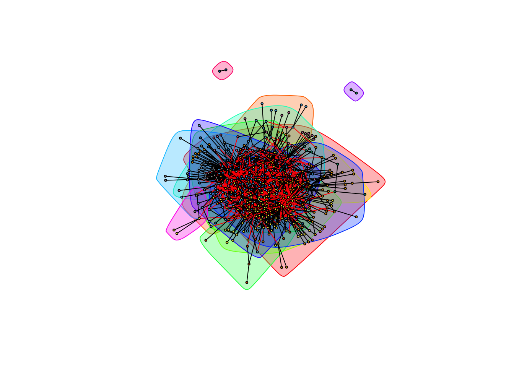
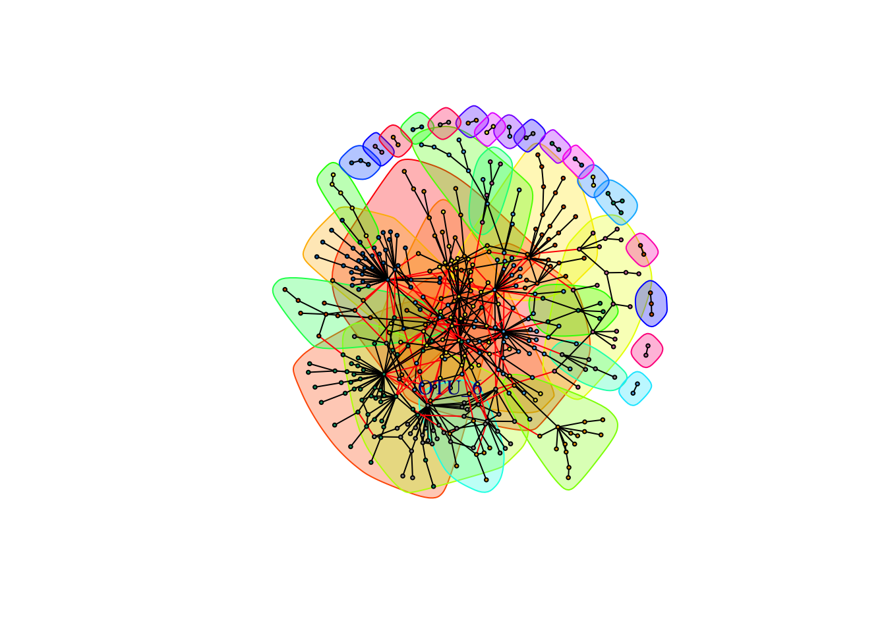
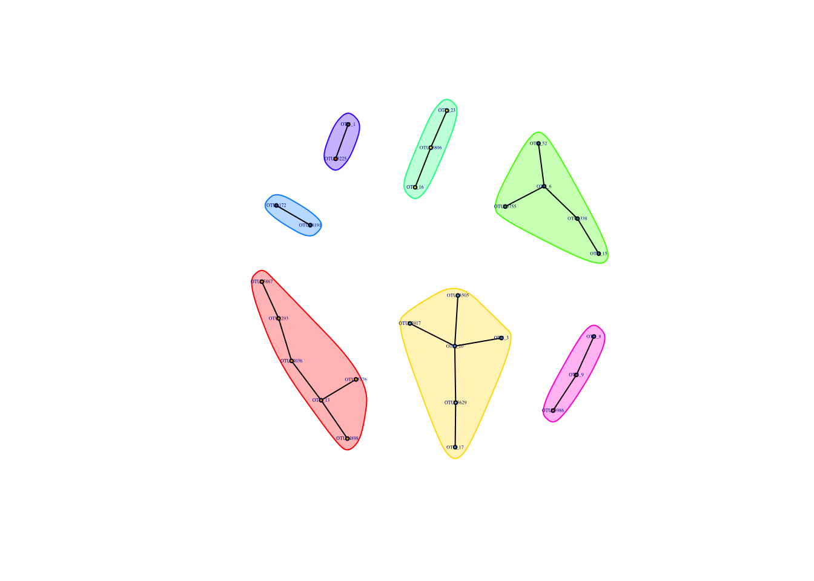
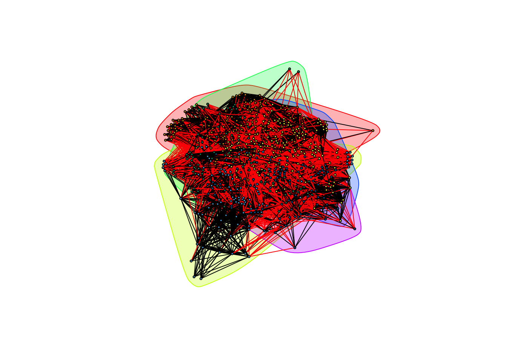
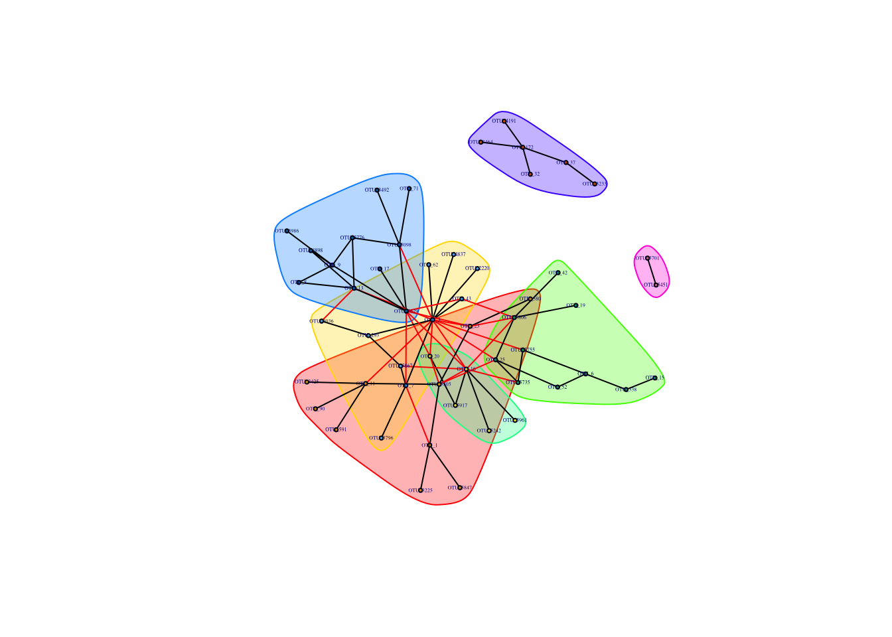

Bacteria only
library(data.table, warn.conflicts = FALSE)
library(igraph, warn.conflicts = FALSE)taxa is the look-up table for the OTUs. cooccurrence_data contains pairwise Spearman correlation ranks for pairs of OTUs.
taxa <- data.table(read.delim("./data/bacteria/bacteria_classified_otus",
sep = "", header = TRUE))
head(taxa)## OTU domain phylum class order
## 1: OTU_4337 Bacteria Proteobacteria Gammaproteobacteria Pseudomonadales
## 2: OTU_893 Bacteria Chloroflexi Thermomicrobia JG30-KF-CM45
## 3: OTU_4335 Bacteria Proteobacteria Alphaproteobacteria Rhizobiales
## 4: OTU_2826 Bacteria TM6 SJA-4
## 5: OTU_4333 Archaea Euryarchaeota Methanobacteria Methanobacteriales
## 6: OTU_4332 Archaea Euryarchaeota DSEG HydGC-84-221A
## family genus
## 1: Moraxellaceae Acinetobacter
## 2:
## 3: Phyllobacteriaceae Mesorhizobium
## 4:
## 5:
## 6:cooccurrence_data <- data.table(read.table("./data/bacteria/bacteria_cooccurrence",
col.names = c("treatment", "OTU_1", "OTU_2", "rho", "p")))
head(cooccurrence_data)## treatment OTU_1 OTU_2 rho p
## 1: Bagged OTU_5142 OTU_5257 0.521706 1.62049e-05
## 2: Bagged OTU_5142 OTU_3925 0.245753 5.62527e-02
## 3: Bagged OTU_5142 OTU_2529 0.430690 5.30627e-04
## 4: Bagged OTU_5142 OTU_5823 0.251251 5.07966e-02
## 5: Bagged OTU_5142 OTU_162 0.449131 2.82600e-04
## 6: Bagged OTU_5142 OTU_4153 0.368088 3.51595e-03We process coocurrence_data by removing OTU interactions non-significant \(\rho\) values by filtering out those with a \(p\)-value less than \(0.05\), then filtering out cyanobacteria and choloroplast data, as well as all observations from bird samples:
cooccurrence_data <- cooccurrence_data[p <= 0.05, -5] # Remove p-values from table
remove <- taxa[which(taxa[[4]] %in% c("Cyanobacteria","Chloroplast")),]$OTU
taxa <- taxa[-c(remove),]
complete_data <- cooccurrence_data[-c(which(apply(cooccurrence_data, 1, function(x) any(remove %in% x)))),]
bird_data <- cooccurrence_data[treatment == "Bird", ]
complete_data <- cooccurrence_data[treatment != "Bird", ]We then remove all edges that are \(\textit{not}\) connected to the indicated OTUs of interest:
otus_of_interest <- c("Acinetobacter", "Gluconobacter", "Neokomagataea", "erwinia", "Pantoea", "resenbergiella", "Asaia", "Lactobacillus", "Pseudomonas")
otus_of_interest <- taxa[which(apply(taxa, 1, function(x) any(otus_of_interest %in% x))),]$OTU
trimmed_data <- complete_data[which(apply(complete_data, 1, function(x) any(otus_of_interest %in% x))), ]
head(trimmed_data)## treatment OTU_1 OTU_2 rho
## 1: Bagged OTU_5142 OTU_162 0.449131
## 2: Bagged OTU_3559 OTU_4597 0.291322
## 3: Bagged OTU_3559 OTU_4570 0.291322
## 4: Bagged OTU_3559 OTU_4796 0.439302
## 5: Bagged OTU_3559 OTU_2323 0.285776
## 6: Bagged OTU_3559 OTU_5804 0.291322We seperate the coocurrence data into a positive and negative group.
trimmed_positive_weights <- trimmed_data[trimmed_data[['rho']] > 0]
head(trimmed_positive_weights)## treatment OTU_1 OTU_2 rho
## 1: Bagged OTU_5142 OTU_162 0.449131
## 2: Bagged OTU_3559 OTU_4597 0.291322
## 3: Bagged OTU_3559 OTU_4570 0.291322
## 4: Bagged OTU_3559 OTU_4796 0.439302
## 5: Bagged OTU_3559 OTU_2323 0.285776
## 6: Bagged OTU_3559 OTU_5804 0.291322trimmed_negative_weights <- trimmed_data[trimmed_data[['rho']] < 0]
head(trimmed_negative_weights)## treatment OTU_1 OTU_2 rho
## 1: Bagged OTU_5257 OTU_8 -0.253046
## 2: Bagged OTU_4036 OTU_3492 -0.293861
## 3: Bagged OTU_6 OTU_3492 -0.254160
## 4: Bagged OTU_6 OTU_5398 -0.258791
## 5: Bagged OTU_6 OTU_21 -0.316472
## 6: Bagged OTU_6 OTU_5 -0.308091We’ll look at the positive and negative networks for each of the three treatments, as well as when all the treatments are combined together.
Trimmed Data
All the following analysis is performed on the trimmed data set. Specifically, this analysis only examines interactions between Acinetobacter, Gluconobacter, Neokomagataea, erwinia, Pantoea, resenbergiella, Asaia, Lactobacillus, Pseudomonas
Exposed Communities
Positive weights
We create a directed graph weighted by Spearman correlation for the Exposed treatment for those OTUs that are positively correlated to each other:
exposed_data_positive <- trimmed_positive_weights[treatment == "Exposed"]
exposed_data_positive <- exposed_data_positive[, -1]
gr_exposed_positive <- graph.data.frame(exposed_data_positive, directed = FALSE)
plot(gr_exposed_positive, vertex.size = 3,
vertex.label = NA)
To determine communities, we use cluster_fast_greedy, which does greedy (local) optimization of the graph’s modularity score.
exposed_communities_greedy_positive <- cluster_fast_greedy(gr_exposed_positive, weights = E(gr_exposed_positive)$rho)
plot(exposed_communities_greedy_positive, gr_exposed_positive,
layout = layout.fruchterman.reingold(gr_exposed_positive),
rescaled = TRUE,
vertex.size = 2,
vertex.label = NA
) The modularity of the community structure is:
The modularity of the community structure is:
tep.mod <- modularity(gr_exposed_positive, membership(exposed_communities_greedy_positive))Note the community by itself. The members of this community are:
communities(exposed_communities_greedy_positive)[[6]]## [1] "OTU_3609" "OTU_345" "OTU_5917" "OTU_4224" "OTU_304" "OTU_86"
## [7] "OTU_609" "OTU_556" "OTU_965" "OTU_2346" "OTU_736" "OTU_678"
## [13] "OTU_1228" "OTU_847" "OTU_168" "OTU_67" "OTU_1919" "OTU_3510"
## [19] "OTU_231" "OTU_186" "OTU_3572" "OTU_5784" "OTU_1631" "OTU_5545"
## [25] "OTU_394" "OTU_5047" "OTU_4397" "OTU_1741" "OTU_130" "OTU_4680"
## [31] "OTU_1416" "OTU_571" "OTU_591" "OTU_287" "OTU_3653" "OTU_4387"
## [37] "OTU_980" "OTU_1476" "OTU_359" "OTU_1243" "OTU_126" "OTU_1702"taxa[OTU %in% communities(exposed_communities_greedy_positive)[[6]]]## OTU domain phylum class
## 1: OTU_67 Bacteria Proteobacteria Alphaproteobacteria
## 2: OTU_847 Bacteria Proteobacteria Alphaproteobacteria
## 3: OTU_3609 Bacteria Proteobacteria Gammaproteobacteria
## 4: OTU_5047 Bacteria Firmicutes Bacilli
## 5: OTU_609 Bacteria Actinobacteria Actinobacteria
## 6: OTU_287 Bacteria Bacteroidetes Cytophagia
## 7: OTU_1228 Bacteria Proteobacteria Alphaproteobacteria
## 8: OTU_678 Bacteria OP3 koll11
## 9: OTU_1243 Bacteria Bacteroidetes [Saprospirae]
## 10: OTU_345 Bacteria Proteobacteria Gammaproteobacteria
## 11: OTU_4387 Bacteria Firmicutes Bacilli
## 12: OTU_359 Bacteria OD1 ZB2
## 13: OTU_1476 Bacteria Cyanobacteria Oscillatoriophycideae
## 14: OTU_3510 Bacteria Proteobacteria Alphaproteobacteria
## 15: OTU_4397 Bacteria Firmicutes Bacilli
## 16: OTU_591 Bacteria Proteobacteria Betaproteobacteria
## 17: OTU_3572 Bacteria Proteobacteria Alphaproteobacteria
## 18: OTU_168 Bacteria Proteobacteria Alphaproteobacteria
## 19: OTU_186 Bacteria Proteobacteria Alphaproteobacteria
## 20: OTU_304 Bacteria Proteobacteria Gammaproteobacteria
## 21: OTU_980 Bacteria Firmicutes Bacilli
## 22: OTU_2346 Bacteria Actinobacteria Actinobacteria
## 23: OTU_1631 Bacteria Proteobacteria Alphaproteobacteria
## 24: OTU_4680 Bacteria Bacteroidetes Flavobacteriia
## 25: OTU_5784 Bacteria Proteobacteria Alphaproteobacteria
## 26: OTU_4224 Bacteria Proteobacteria Gammaproteobacteria
## 27: OTU_1741 Bacteria Firmicutes Bacilli
## 28: OTU_126 Bacteria Bacteroidetes Sphingobacteriia
## 29: OTU_231 Bacteria Proteobacteria Alphaproteobacteria
## 30: OTU_3653 Bacteria Proteobacteria Betaproteobacteria
## 31: OTU_394 Bacteria Proteobacteria Alphaproteobacteria
## 32: OTU_5545 Bacteria Proteobacteria Alphaproteobacteria
## 33: OTU_571 Bacteria Firmicutes Bacilli
## 34: OTU_86 Bacteria Proteobacteria Gammaproteobacteria
## 35: OTU_736 Bacteria Actinobacteria Actinobacteria
## 36: OTU_1702 Bacteria Proteobacteria Betaproteobacteria
## 37: OTU_965 Bacteria Actinobacteria Actinobacteria
## 38: OTU_5917 Bacteria Proteobacteria Gammaproteobacteria
## 39: OTU_130 Bacteria Proteobacteria Betaproteobacteria
## 40: OTU_1919 Bacteria Proteobacteria Alphaproteobacteria
## 41: OTU_1416 Bacteria Firmicutes Bacilli
## OTU domain phylum class
## order family genus
## 1: Sphingomonadales Erythrobacteraceae
## 2: Caulobacterales Caulobacteraceae Mycoplana
## 3: Oceanospirillales Halomonadaceae Halomonas
## 4: Bacillales Staphylococcaceae Staphylococcus
## 5: Actinomycetales Corynebacteriaceae Corynebacterium
## 6: Cytophagales Cytophagaceae Hymenobacter
## 7: Rhodospirillales Acetobacteraceae Roseomonas
## 8:
## 9: [Saprospirales] Chitinophagaceae
## 10: Oceanospirillales Halomonadaceae Haererehalobacter
## 11: Bacillales Bacillaceae Anoxybacillus
## 12:
## 13: Chroococcales Xenococcaceae
## 14: Sphingomonadales Sphingomonadaceae
## 15: Bacillales Staphylococcaceae Staphylococcus
## 16: Burkholderiales Comamonadaceae
## 17: Rhizobiales Bradyrhizobiaceae Bosea
## 18: Caulobacterales Caulobacteraceae Phenylobacterium
## 19: Rhizobiales Beijerinckiaceae
## 20: Aeromonadales Aeromonadaceae
## 21: Bacillales Paenibacillaceae Paenibacillus
## 22: Actinomycetales Actinomycetaceae Actinomyces
## 23: Rhizobiales Methylobacteriaceae
## 24: Flavobacteriales Flavobacteriaceae Flavobacterium
## 25: Rhizobiales Methylocystaceae
## 26: Enterobacteriales Enterobacteriaceae
## 27: Lactobacillales Lactobacillaceae Lactobacillus
## 28: Sphingobacteriales Sphingobacteriaceae Pedobacter
## 29: Sphingomonadales Sphingomonadaceae Sphingomonas
## 30: Burkholderiales Oxalobacteraceae Janthinobacterium
## 31: Rickettsiales mitochondria
## 32: Rickettsiales mitochondria
## 33: Bacillales Paenibacillaceae Paenibacillus
## 34: Aeromonadales Aeromonadaceae
## 35: Actinomycetales Actinomycetaceae N09
## 36: Burkholderiales Oxalobacteraceae
## 37: Actinomycetales Dermabacteraceae Brachybacterium
## 38: Enterobacteriales Enterobacteriaceae
## 39: Burkholderiales Oxalobacteraceae
## 40: Sphingomonadales Sphingomonadaceae
## 41: Bacillales Paenibacillaceae Paenibacillus
## order family genusAt the center of this community is OTU_6:
taxa[OTU == "OTU_6"]## OTU domain phylum class order
## 1: OTU_6 Bacteria Proteobacteria Gammaproteobacteria Pseudomonadales
## family genus
## 1: Moraxellaceae AcinetobacterNegative Weights
We repeat the above process for the negatively correlated OTUs:
exposed_data_negative <- trimmed_negative_weights[treatment == "Exposed"]
exposed_data_negative <- exposed_data_negative[, -1]
exposed_data_negative[[3]] <- abs(exposed_data_negative[[3]])
gr_exposed_negative <- graph.data.frame(exposed_data_negative, directed = FALSE)
plot(gr_exposed_negative, vertex.size = 3,
vertex.label = NA)
exposed_communities_greedy_negative <- cluster_fast_greedy(gr_exposed_negative, weights = E(gr_exposed_negative)$rho)
plot(exposed_communities_greedy_negative, gr_exposed_negative,
layout = layout.fruchterman.reingold(gr_exposed_negative),
vertex.size = 2, vertex.label = NA)
The modularity of the community structure is:
ten.mod <- modularity(gr_exposed_negative, membership(exposed_communities_greedy_negative))We again find OTU_6 as the center of a community. Below are the OTUs in this community. Notice that they are mostly $:
taxa[OTU %in% communities(exposed_communities_greedy_negative)[[1]]]## OTU domain phylum class order
## 1: OTU_4337 Bacteria Proteobacteria Gammaproteobacteria Pseudomonadales
## 2: OTU_5778 Bacteria Proteobacteria Gammaproteobacteria Pseudomonadales
## 3: OTU_5776 Bacteria Proteobacteria Gammaproteobacteria Pseudomonadales
## 4: OTU_5 Bacteria Proteobacteria Alphaproteobacteria Rickettsiales
## 5: OTU_4191 Bacteria Proteobacteria Gammaproteobacteria Pseudomonadales
## 6: OTU_5806 Bacteria Proteobacteria Gammaproteobacteria Enterobacteriales
## 7: OTU_4036 Bacteria Proteobacteria Gammaproteobacteria Pseudomonadales
## 8: OTU_3986 Bacteria Proteobacteria Gammaproteobacteria Pseudomonadales
## 9: OTU_5834 Bacteria Proteobacteria Gammaproteobacteria Pseudomonadales
## 10: OTU_43 Bacteria Proteobacteria Betaproteobacteria Burkholderiales
## 11: OTU_5701 Bacteria Proteobacteria Betaproteobacteria Burkholderiales
## 12: OTU_4345 Bacteria Proteobacteria Gammaproteobacteria Pseudomonadales
## family genus
## 1: Moraxellaceae Acinetobacter
## 2: Moraxellaceae Acinetobacter
## 3: Moraxellaceae Acinetobacter
## 4: mitochondria
## 5: Moraxellaceae Acinetobacter
## 6: Enterobacteriaceae
## 7: Moraxellaceae Acinetobacter
## 8: Moraxellaceae Acinetobacter
## 9: Moraxellaceae Acinetobacter
## 10: Oxalobacteraceae Cupriavidus
## 11: Comamonadaceae
## 12: Moraxellaceae AcinetobacterSomething else to note of interest is OTU_5, another \(\textit{Proteobacteria}\):
taxa[OTU == "OTU_5"]## OTU domain phylum class order
## 1: OTU_5 Bacteria Proteobacteria Alphaproteobacteria Rickettsiales
## family genus
## 1: mitochondriaOf interest is that OTU_5 is in its own cluster, separate from OTU_6, and that there is no overlap in their own communities. Though it is not shown here, we will see here that OTU_5 plays a role similar to that of OTU_6 - a highly central node in its own community.
Caged Communities
Positive weights
plot(caged_communities_greedy_positive, gr_caged_positive,
layout = layout.fruchterman.reingold(gr_caged_positive),
rescaled = TRUE,
vertex.size = 2,
vertex.label = NA
)
The modularity of the community structure is:
tcp.mod <- modularity(gr_caged_positive, membership(caged_communities_greedy_positive))We again find OTU_6 as the central member of a cluster that is well-separated from the rest of the community. The OTUs in this cluster are:
taxa[OTU %in% communities(caged_communities_greedy_positive)[[7]]]## OTU domain phylum class order
## 1: OTU_3780 Bacteria Proteobacteria Betaproteobacteria Rhodocyclales
## 2: OTU_50 Bacteria Firmicutes Bacilli Bacillales
## 3: OTU_120 Bacteria Actinobacteria Actinobacteria Actinomycetales
## 4: OTU_4191 Bacteria Proteobacteria Gammaproteobacteria Pseudomonadales
## 5: OTU_3096 Bacteria Proteobacteria Betaproteobacteria Burkholderiales
## 6: OTU_5701 Bacteria Proteobacteria Betaproteobacteria Burkholderiales
## 7: OTU_7 Bacteria Bacteroidetes Flavobacteriia Flavobacteriales
## 8: OTU_27 Bacteria Firmicutes Bacilli Lactobacillales
## family genus
## 1: Rhodocyclaceae Dechloromonas
## 2: Bacillaceae
## 3: Microbacteriaceae
## 4: Moraxellaceae Acinetobacter
## 5: Alcaligenaceae Sutterella
## 6: Comamonadaceae
## 7: [Weeksellaceae] Cloacibacterium
## 8: Streptococcaceae StreptococcusNegative Weights
caged_data_negative <- trimmed_negative_weights[treatment == "Caged"]
caged_data_negative <- caged_data_negative[, -1]
caged_data_negative[[3]] <- abs(caged_data_negative[[3]])
gr_caged_negative <- graph.data.frame(caged_data_negative, directed = FALSE)
caged_communities_greedy_negative <- cluster_fast_greedy(gr_caged_negative, weights = E(gr_caged_negative)$rho)
plot(caged_communities_greedy_negative, gr_caged_negative,
layout = layout.fruchterman.reingold(gr_caged_negative),
vertex.size = 2,
vertex.label = NA)
The modularity of the community structure is:
tcn.mod <- modularity(gr_caged_negative, membership(caged_communities_greedy_negative))The OTUs in the same community of OTU_6 are:
taxa[OTU %in% communities(caged_communities_greedy_negative)[[2]]]## OTU domain phylum class order
## 1: OTU_5302 Bacteria Proteobacteria Alphaproteobacteria Rickettsiales
## 2: OTU_4227 Bacteria Proteobacteria Alphaproteobacteria Rickettsiales
## 3: OTU_8 Bacteria Proteobacteria Alphaproteobacteria Rhodospirillales
## family genus
## 1: mitochondria
## 2: mitochondria
## 3: Acetobacteraceae GluconobacterAs mentioned above, we see OTU_5 negatively correlated with OTU_6 and as highly central node. While we don’t see \(\textit{Proteobacteria}\) in the OTU_6 cluster, the OTUs in the cluster of OTU_5 are all \(\textit{Proteobacteria}\):
taxa[OTU %in% communities(caged_communities_greedy_negative)[[1]]]## OTU domain phylum class order
## 1: OTU_20 Bacteria Proteobacteria Gammaproteobacteria Pseudomonadales
## 2: OTU_5 Bacteria Proteobacteria Alphaproteobacteria Rickettsiales
## 3: OTU_4161 Bacteria Proteobacteria Alphaproteobacteria Rickettsiales
## 4: OTU_3986 Bacteria Proteobacteria Gammaproteobacteria Pseudomonadales
## 5: OTU_5834 Bacteria Proteobacteria Gammaproteobacteria Pseudomonadales
## family genus
## 1: Moraxellaceae Acinetobacter
## 2: mitochondria
## 3: mitochondria
## 4: Moraxellaceae Acinetobacter
## 5: Moraxellaceae AcinetobacterBagged Communities
Positive weights
bagged_data_positive <- trimmed_positive_weights[treatment == "Bagged"]
bagged_data_positive <- bagged_data_positive[, -1]
gr_bagged_positive <- graph.data.frame(bagged_data_positive, directed = FALSE)
bagged_communities_greedy_positive <- cluster_fast_greedy(gr_bagged_positive, weights = E(gr_bagged_positive)$rho)
plot(bagged_communities_greedy_positive, gr_bagged_positive,
layout = layout.fruchterman.reingold(gr_bagged_positive),
rescaled = TRUE,
vertex.size = 2,
vertex.label = NA
)
The modularity score of the community structure is:
tbp.mod <- modularity(gr_bagged_positive, membership(bagged_communities_greedy_positive))For completeness, here are the OTUs in the same community as OTU_6:
taxa[OTU %in% communities(bagged_communities_greedy_positive)[[1]]]## OTU domain phylum class
## 1: OTU_3426 Bacteria Proteobacteria Betaproteobacteria
## 2: OTU_3425 Bacteria Proteobacteria Betaproteobacteria
## 3: OTU_1035 Bacteria Bacteroidetes Sphingobacteriia
## 4: OTU_5709 Bacteria Proteobacteria Betaproteobacteria
## 5: OTU_5708 Bacteria Proteobacteria Betaproteobacteria
## 6: OTU_3153 Bacteria Proteobacteria Alphaproteobacteria
## 7: OTU_52 Bacteria Proteobacteria Betaproteobacteria
## 8: OTU_1011 Bacteria Proteobacteria Betaproteobacteria
## 9: OTU_1018 Bacteria Proteobacteria Alphaproteobacteria
## 10: OTU_3930 Bacteria Proteobacteria Alphaproteobacteria
## 11: OTU_42 Bacteria Bacteroidetes Cytophagia
## 12: OTU_994 Bacteria Bacteroidetes Cytophagia
## 13: OTU_841 Bacteria Proteobacteria Gammaproteobacteria
## 14: OTU_5074 Bacteria Proteobacteria Gammaproteobacteria
## 15: OTU_3925 Bacteria Proteobacteria Betaproteobacteria
## 16: OTU_38 Bacteria Proteobacteria Gammaproteobacteria
## 17: OTU_479 Bacteria Proteobacteria Alphaproteobacteria
## 18: OTU_5192 Bacteria Proteobacteria Betaproteobacteria
## 19: OTU_461 Bacteria Firmicutes Clostridia
## 20: OTU_5454 Bacteria Proteobacteria Gammaproteobacteria
## 21: OTU_1228 Bacteria Proteobacteria Alphaproteobacteria
## 22: OTU_16 Bacteria Proteobacteria Betaproteobacteria
## 23: OTU_13 Bacteria Proteobacteria Betaproteobacteria
## 24: OTU_671 Bacteria Actinobacteria Actinobacteria
## 25: OTU_4624 Bacteria Proteobacteria Betaproteobacteria
## 26: OTU_349 Bacteria Proteobacteria Deltaproteobacteria
## 27: OTU_3429 Bacteria Proteobacteria Gammaproteobacteria
## 28: OTU_5307 Bacteria Proteobacteria Betaproteobacteria
## 29: OTU_5367 Bacteria Actinobacteria Actinobacteria
## 30: OTU_1476 Bacteria Cyanobacteria Oscillatoriophycideae
## 31: OTU_582 Bacteria Proteobacteria Alphaproteobacteria
## 32: OTU_3721 Bacteria Proteobacteria Betaproteobacteria
## 33: OTU_2100 Bacteria Proteobacteria Gammaproteobacteria
## 34: OTU_596 Bacteria Bacteroidetes Sphingobacteriia
## 35: OTU_786 Bacteria Proteobacteria Betaproteobacteria
## 36: OTU_5113 Bacteria Actinobacteria Actinobacteria
## 37: OTU_2169 Bacteria Acidobacteria Solibacteres
## 38: OTU_329 Bacteria Proteobacteria Alphaproteobacteria
## 39: OTU_550 Bacteria Proteobacteria Alphaproteobacteria
## 40: OTU_158 Bacteria Proteobacteria Deltaproteobacteria
## 41: OTU_153 Bacteria Firmicutes Bacilli
## 42: OTU_336 Bacteria Proteobacteria Alphaproteobacteria
## 43: OTU_338 Bacteria Proteobacteria Gammaproteobacteria
## 44: OTU_5879 Bacteria Proteobacteria Alphaproteobacteria
## 45: OTU_5878 Bacteria Proteobacteria Gammaproteobacteria
## 46: OTU_5667 Bacteria Proteobacteria Betaproteobacteria
## 47: OTU_2529 Bacteria Proteobacteria Betaproteobacteria
## 48: OTU_1546 Bacteria Proteobacteria Gammaproteobacteria
## 49: OTU_1084 Bacteria Proteobacteria TA18
## 50: OTU_1762 Bacteria Proteobacteria Alphaproteobacteria
## 51: OTU_5702 Bacteria Proteobacteria Betaproteobacteria
## 52: OTU_502 Bacteria Bacteroidetes Flavobacteriia
## 53: OTU_5548 Bacteria Proteobacteria Betaproteobacteria
## 54: OTU_3269 Bacteria Proteobacteria Alphaproteobacteria
## 55: OTU_2132 Bacteria Actinobacteria Actinobacteria
## 56: OTU_510 Bacteria Proteobacteria Betaproteobacteria
## 57: OTU_1741 Bacteria Firmicutes Bacilli
## 58: OTU_5447 Bacteria Proteobacteria Betaproteobacteria
## 59: OTU_126 Bacteria Bacteroidetes Sphingobacteriia
## 60: OTU_5623 Bacteria Bacteroidetes Flavobacteriia
## 61: OTU_4920 Bacteria Proteobacteria Betaproteobacteria
## 62: OTU_717 Bacteria Bacteroidetes Flavobacteriia
## 63: OTU_711 Bacteria Bacteroidetes Flavobacteriia
## 64: OTU_1080 Bacteria Bacteroidetes Flavobacteriia
## 65: OTU_2718 Bacteria Proteobacteria Alphaproteobacteria
## 66: OTU_81 Bacteria Firmicutes Bacilli
## 67: OTU_5972 Bacteria Proteobacteria Betaproteobacteria
## 68: OTU_221 Bacteria Proteobacteria Alphaproteobacteria
## 69: OTU_1708 Bacteria Bacteroidetes [Saprospirae]
## 70: OTU_1700 Bacteria Firmicutes Bacilli
## 71: OTU_219 Bacteria [Thermi] Deinococci
## 72: OTU_218 Bacteria Acidobacteria [Chloracidobacteria]
## 73: OTU_5745 Bacteria Proteobacteria Betaproteobacteria
## 74: OTU_2748 Bacteria Bacteroidetes Bacteroidia
## 75: OTU_130 Bacteria Proteobacteria Betaproteobacteria
## 76: OTU_1759 Bacteria Proteobacteria Alphaproteobacteria
## 77: OTU_5763 Bacteria Proteobacteria Alphaproteobacteria
## 78: OTU_4759 Bacteria Proteobacteria Betaproteobacteria
## 79: OTU_5029 Bacteria Proteobacteria Betaproteobacteria
## 80: OTU_355 Bacteria Proteobacteria Gammaproteobacteria
## OTU domain phylum class
## order family genus
## 1: Burkholderiales Comamonadaceae
## 2: Burkholderiales Comamonadaceae Ramlibacter
## 3: Sphingobacteriales Sphingobacteriaceae Sphingobacterium
## 4: Rhodocyclales Rhodocyclaceae Zoogloea
## 5: Burkholderiales Comamonadaceae
## 6: Sphingomonadales Sphingomonadaceae Novosphingobium
## 7: Rhodocyclales Rhodocyclaceae
## 8: Burkholderiales Comamonadaceae
## 9: Rhodobacterales Hyphomonadaceae
## 10: Rhizobiales Bradyrhizobiaceae
## 11: Cytophagales Cytophagaceae
## 12: Cytophagales Cytophagaceae Hymenobacter
## 13:
## 14: Oceanospirillales Halomonadaceae Candidatus
## 15: Burkholderiales Comamonadaceae Methylibium
## 16: Pseudomonadales Pseudomonadaceae Pseudomonas
## 17: Rhodobacterales Rhodobacteraceae Paracoccus
## 18: Burkholderiales Comamonadaceae Pelomonas
## 19: Clostridiales [Tissierellaceae] Finegoldia
## 20: Xanthomonadales Xanthomonadaceae
## 21: Rhodospirillales Acetobacteraceae Roseomonas
## 22: Burkholderiales Comamonadaceae Aquabacterium
## 23: Burkholderiales Comamonadaceae Acidovorax
## 24: Actinomycetales Mycobacteriaceae Mycobacterium
## 25: Burkholderiales Comamonadaceae Curvibacter
## 26: MIZ46
## 27: Enterobacteriales Enterobacteriaceae Erwinia
## 28: Burkholderiales Comamonadaceae
## 29: Actinomycetales Intrasporangiaceae
## 30: Chroococcales Xenococcaceae
## 31: Caulobacterales Caulobacteraceae
## 32: Burkholderiales Oxalobacteraceae Janthinobacterium
## 33: Pseudomonadales Pseudomonadaceae Pseudomonas
## 34: Sphingobacteriales
## 35: Burkholderiales Comamonadaceae
## 36: Actinomycetales Microbacteriaceae Salinibacterium
## 37: Solibacterales
## 38: Caulobacterales Caulobacteraceae
## 39: Rhizobiales Methylobacteriaceae Methylobacterium
## 40: Myxococcales
## 41: Lactobacillales Lactobacillaceae Lactobacillus
## 42: Rhizobiales Methylobacteriaceae
## 43: Pseudomonadales Pseudomonadaceae Pseudomonas
## 44: Rhizobiales
## 45: Pseudomonadales Moraxellaceae Acinetobacter
## 46: Burkholderiales Comamonadaceae
## 47: Burkholderiales Comamonadaceae
## 48: Alteromonadales 211ds20
## 49: PHOS-HD29
## 50: Sphingomonadales Sphingomonadaceae Sphingomonas
## 51: Rhodocyclales Rhodocyclaceae Dechloromonas
## 52: Flavobacteriales Flavobacteriaceae Flavobacterium
## 53: Rhodocyclales Rhodocyclaceae Dechloromonas
## 54: Sphingomonadales Sphingomonadaceae Sphingomonas
## 55: Actinomycetales ACK-M1
## 56: Rhodocyclales Rhodocyclaceae Dechloromonas
## 57: Lactobacillales Lactobacillaceae Lactobacillus
## 58: Burkholderiales Comamonadaceae Acidovorax
## 59: Sphingobacteriales Sphingobacteriaceae Pedobacter
## 60: Flavobacteriales Flavobacteriaceae Flavobacterium
## 61: Rhodocyclales Rhodocyclaceae Dechloromonas
## 62: Flavobacteriales [Weeksellaceae] Chryseobacterium
## 63: Flavobacteriales [Weeksellaceae] Elizabethkingia
## 64: Flavobacteriales [Weeksellaceae] Chryseobacterium
## 65: Caulobacterales Caulobacteraceae
## 66: Gemellales Gemellaceae Gemella
## 67: Burkholderiales Comamonadaceae Limnohabitans
## 68: Rhodobacterales Rhodobacteraceae Rhodobacter
## 69: [Saprospirales]
## 70: Bacillales Staphylococcaceae Salinicoccus
## 71: Deinococcales Deinococcaceae Deinococcus
## 72: RB41 Ellin6075
## 73: Burkholderiales Comamonadaceae
## 74: Bacteroidales Bacteroidaceae Bacteroides
## 75: Burkholderiales Oxalobacteraceae
## 76: Rickettsiales mitochondria
## 77:
## 78: Burkholderiales Comamonadaceae
## 79: Burkholderiales Comamonadaceae
## 80: Oceanospirillales Halomonadaceae Halomonas
## order family genusOTU_5 was not present in this graph.
'OTU_5' %in% V(gr_bagged_positive)$name## [1] FALSENegative Weights
bagged_data_negative <- trimmed_negative_weights[treatment == "Bagged"]
bagged_data_negative <- bagged_data_negative[, -1]
bagged_data_negative[[3]] <- abs(bagged_data_negative[[3]])
gr_bagged_negative <- graph.data.frame(bagged_data_negative, directed = FALSE)
bagged_communities_greedy_negative <- cluster_fast_greedy(gr_bagged_negative, weights = E(gr_bagged_negative)$rho)
plot(bagged_communities_greedy_negative, gr_bagged_negative,
layout = layout.fruchterman.reingold(gr_bagged_negative),
rescaled = TRUE,
vertex.size = 2,
vertex.label = NA)
Modularity score:
tbn.mod <- modularity(gr_bagged_negative, membership(bagged_communities_greedy_negative))taxa[OTU %in% communities(bagged_communities_greedy_negative)[[1]]]## OTU domain phylum class order
## 1: OTU_5 Bacteria Proteobacteria Alphaproteobacteria Rickettsiales
## 2: OTU_4938 Bacteria Proteobacteria Alphaproteobacteria Rickettsiales
## 3: OTU_5398 Bacteria Proteobacteria Gammaproteobacteria Pseudomonadales
## 4: OTU_6 Bacteria Proteobacteria Gammaproteobacteria Pseudomonadales
## family genus
## 1: mitochondria
## 2: mitochondria
## 3: Pseudomonadaceae Pseudomonas
## 4: Moraxellaceae Acinetobactertaxa[OTU %in% communities(bagged_communities_greedy_negative)[[2]]]## OTU domain phylum class order
## 1: OTU_3478 Bacteria Proteobacteria Alphaproteobacteria Rickettsiales
## 2: OTU_5867 Bacteria Proteobacteria Gammaproteobacteria Enterobacteriales
## 3: OTU_8 Bacteria Proteobacteria Alphaproteobacteria Rhodospirillales
## 4: OTU_3 Bacteria Proteobacteria Gammaproteobacteria Enterobacteriales
## 5: OTU_5257 Bacteria Proteobacteria Betaproteobacteria Burkholderiales
## family genus
## 1: mitochondria
## 2: Enterobacteriaceae
## 3: Acetobacteraceae Gluconobacter
## 4: Enterobacteriaceae Erwinia
## 5: Comamonadaceae PelomonasAll Treatments
We will now look at all treatments together. Note that data points from Bird samples have already been removed.
Positive Weights
trimmed_all_positive <- trimmed_positive_weights[, -1]
gr_trimmed_all_positive <- graph.data.frame(trimmed_all_positive, directed = FALSE)
trimmed_all_positive_communities <- cluster_fast_greedy(gr_trimmed_all_positive,
weights = E(gr_trimmed_all_positive)$rho)## Error in cluster_fast_greedy(gr_trimmed_all_positive, weights = E(gr_trimmed_all_positive)$rho): At fast_community.c:639 : fast-greedy community finding works only on graphs without multiple edges, Invalid valueBecause all the treatments are being combined into one graph, there can be multiple (parallel) edges between OTUs. The clustering algorithm we have been using requires that there not be multiple edges between OTUs. We will collapse multiple edges by taking their mean - that is the mean correlation of the two OTUs across all treatments. (Are there potential problems with this collapsing rule?)
gr_trimmed_all_positive <- simplify(gr_trimmed_all_positive,
edge.attr.comb = "mean")
trimmed_all_positive_communities <- cluster_fast_greedy(gr_trimmed_all_positive,
weights = E(gr_trimmed_all_positive)$rho)
plot(trimmed_all_positive_communities, gr_trimmed_all_positive,
layout = layout.fruchterman.reingold(gr_trimmed_all_positive),
rescaled = TRUE,
vertex.size = 2,
vertex.label = NA
)
What’s interesting here is that the graph has a lot of “spokes,” which hints at important OTUs.
Modularity score:
tap.mod <- modularity(gr_trimmed_all_positive, membership(trimmed_all_positive_communities))Negative Weights
trimmed_all_negative <- trimmed_negative_weights[, -1]
trimmed_all_negative[[3]] <- abs(trimmed_all_negative[[3]])
gr_trimmed_all_negative <- graph.data.frame(trimmed_all_negative, directed = FALSE)
gr_trimmed_all_negative <- simplify(gr_trimmed_all_negative,
edge.attr.comb = "mean")
trimmed_all_negative_communities <- cluster_fast_greedy(gr_trimmed_all_negative,
weights = E(gr_trimmed_all_negative)$rho)
plot(trimmed_all_negative_communities, gr_trimmed_all_negative,
layout = layout.fruchterman.reingold(gr_trimmed_all_negative),
rescaled = TRUE,
vertex.size = 2,
vertex.label = NA
)
OTU_6 is again in the center of a community. The members of that community are:
taxa[OTU %in% communities(trimmed_all_negative_communities)[[2]]]## OTU domain phylum class
## 1: OTU_1035 Bacteria Bacteroidetes Sphingobacteriia
## 2: OTU_3950 Bacteria Proteobacteria Betaproteobacteria
## 3: OTU_45 Bacteria Proteobacteria Gammaproteobacteria
## 4: OTU_446 Bacteria Firmicutes Clostridia
## 5: OTU_16 Bacteria Proteobacteria Betaproteobacteria
## 6: OTU_5629 Bacteria Proteobacteria Gammaproteobacteria
## 7: OTU_2168 Bacteria Proteobacteria Gammaproteobacteria
## 8: OTU_336 Bacteria Proteobacteria Alphaproteobacteria
## 9: OTU_5247 Bacteria Proteobacteria Gammaproteobacteria
## 10: OTU_233 Bacteria Firmicutes Bacilli
## 11: OTU_4938 Bacteria Proteobacteria Alphaproteobacteria
## 12: OTU_5854 Bacteria Proteobacteria Betaproteobacteria
## 13: OTU_5398 Bacteria Proteobacteria Gammaproteobacteria
## 14: OTU_225 Bacteria Proteobacteria Gammaproteobacteria
## 15: OTU_1076 Bacteria Actinobacteria Actinobacteria
## 16: OTU_9 Bacteria Proteobacteria Gammaproteobacteria
## 17: OTU_6 Bacteria Proteobacteria Gammaproteobacteria
## 18: OTU_7 Bacteria Bacteroidetes Flavobacteriia
## order family genus
## 1: Sphingobacteriales Sphingobacteriaceae Sphingobacterium
## 2: Burkholderiales Comamonadaceae Methylibium
## 3: Pseudomonadales Moraxellaceae Enhydrobacter
## 4: Clostridiales [Mogibacteriaceae]
## 5: Burkholderiales Comamonadaceae Aquabacterium
## 6: Enterobacteriales Enterobacteriaceae
## 7: Enterobacteriales Enterobacteriaceae Enterobacter
## 8: Rhizobiales Methylobacteriaceae
## 9: Enterobacteriales Enterobacteriaceae
## 10: Bacillales Paenibacillaceae Paenibacillus
## 11: Rickettsiales mitochondria
## 12: Burkholderiales Burkholderiaceae Burkholderia
## 13: Pseudomonadales Pseudomonadaceae Pseudomonas
## 14: Pseudomonadales Moraxellaceae Acinetobacter
## 15: Actinomycetales Pseudonocardiaceae Pseudonocardia
## 16: Pseudomonadales Pseudomonadaceae Pseudomonas
## 17: Pseudomonadales Moraxellaceae Acinetobacter
## 18: Flavobacteriales [Weeksellaceae] CloacibacteriumAnd we see a preponderence of \(\textit{proteobacteria}\). We also see the familiar pattern with OTU_5. The OTUs in this cluster are:
taxa[OTU %in% communities(trimmed_all_negative_communities)[[1]]]## OTU domain phylum class order
## 1: OTU_4337 Bacteria Proteobacteria Gammaproteobacteria Pseudomonadales
## 2: OTU_44 Bacteria Proteobacteria Gammaproteobacteria Pseudomonadales
## 3: OTU_5778 Bacteria Proteobacteria Gammaproteobacteria Pseudomonadales
## 4: OTU_5776 Bacteria Proteobacteria Gammaproteobacteria Pseudomonadales
## 5: OTU_3492 Bacteria Proteobacteria Gammaproteobacteria Enterobacteriales
## 6: OTU_5 Bacteria Proteobacteria Alphaproteobacteria Rickettsiales
## 7: OTU_4191 Bacteria Proteobacteria Gammaproteobacteria Pseudomonadales
## 8: OTU_5806 Bacteria Proteobacteria Gammaproteobacteria Enterobacteriales
## 9: OTU_4036 Bacteria Proteobacteria Gammaproteobacteria Pseudomonadales
## 10: OTU_3986 Bacteria Proteobacteria Gammaproteobacteria Pseudomonadales
## 11: OTU_5324 Bacteria Proteobacteria Gammaproteobacteria Pseudomonadales
## 12: OTU_5834 Bacteria Proteobacteria Gammaproteobacteria Pseudomonadales
## 13: OTU_43 Bacteria Proteobacteria Betaproteobacteria Burkholderiales
## 14: OTU_5701 Bacteria Proteobacteria Betaproteobacteria Burkholderiales
## 15: OTU_4345 Bacteria Proteobacteria Gammaproteobacteria Pseudomonadales
## family genus
## 1: Moraxellaceae Acinetobacter
## 2: Pseudomonadaceae Pseudomonas
## 3: Moraxellaceae Acinetobacter
## 4: Moraxellaceae Acinetobacter
## 5: Enterobacteriaceae Erwinia
## 6: mitochondria
## 7: Moraxellaceae Acinetobacter
## 8: Enterobacteriaceae
## 9: Moraxellaceae Acinetobacter
## 10: Moraxellaceae Acinetobacter
## 11: Moraxellaceae Acinetobacter
## 12: Moraxellaceae Acinetobacter
## 13: Oxalobacteraceae Cupriavidus
## 14: Comamonadaceae
## 15: Moraxellaceae AcinetobacterModularity score:
tan.mod <- modularity(gr_trimmed_all_negative, membership(trimmed_all_negative_communities))Complete Data
We reproduce the above analysis on the complete data sat. Again, we separate the data into positive and negative networks:
complete_positive_weights <- complete_data[complete_data[['rho']] > 0]
head(complete_positive_weights)## treatment OTU_1 OTU_2 rho
## 1: Bagged OTU_5142 OTU_5257 0.521706
## 2: Bagged OTU_5142 OTU_2529 0.430690
## 3: Bagged OTU_5142 OTU_162 0.449131
## 4: Bagged OTU_5142 OTU_4153 0.368088
## 5: Bagged OTU_5142 OTU_3496 0.374365
## 6: Bagged OTU_5142 OTU_304 0.310852complete_negative_weights <- complete_data[complete_data[['rho']] < 0]
head(complete_negative_weights)## treatment OTU_1 OTU_2 rho
## 1: Bagged OTU_3559 OTU_2168 -0.265843
## 2: Bagged OTU_3559 OTU_5806 -0.253408
## 3: Bagged OTU_5257 OTU_8 -0.253046
## 4: Bagged OTU_5098 OTU_5970 -0.261365
## 5: Bagged OTU_5098 OTU_1934 -0.261263
## 6: Bagged OTU_2529 OTU_4227 -0.321220Exposed Communities
Positive Weights
complete_exposed_positive <- complete_positive_weights[treatment == "Exposed"]
complete_exposed_positive <- complete_exposed_positive[, -1]
gr_complete_exposed_positive <- graph.data.frame(complete_exposed_positive, directed = FALSE)
complete_exposed_positive_communities <- cluster_fast_greedy(gr_complete_exposed_positive,
weights = E(gr_complete_exposed_positive)$rho)
plot(complete_exposed_positive_communities, gr_complete_exposed_positive,
layout = layout.fruchterman.reingold(gr_complete_exposed_positive),
rescaled = TRUE,
vertex.size = 2,
vertex.label = NA
) Modularity:
Modularity:
cep.mod <- modularity(gr_complete_exposed_positive, membership(complete_exposed_positive_communities))Negative Weights
complete_exposed_negative <- complete_negative_weights[treatment == "Exposed"]
complete_exposed_negative <- complete_exposed_negative[, -1]
complete_exposed_negative[[3]] <- abs(complete_exposed_negative[[3]])
gr_complete_exposed_negative <- graph.data.frame(complete_exposed_negative, directed = FALSE)
complete_exposed_negative_communities <- cluster_fast_greedy(gr_complete_exposed_negative,
weights = E(gr_complete_exposed_negative)$rho)
plot(complete_exposed_negative_communities, gr_complete_exposed_negative,
layout = layout.fruchterman.reingold(gr_complete_exposed_negative),
rescaled = TRUE,
vertex.size = 2,
vertex.label = NA
) Modularity:
Modularity:
cen.mod <- modularity(gr_complete_exposed_negative, membership(complete_exposed_negative_communities))Caged Communities
Positive Weights
complete_caged_positive <- complete_positive_weights[treatment == "Caged"]
complete_caged_positive <- complete_caged_positive[, -1]
gr_complete_caged_positive <- graph.data.frame(complete_caged_positive, directed = FALSE)
complete_caged_positive_communities <- cluster_fast_greedy(gr_complete_caged_positive,
weights = E(gr_complete_caged_positive)$rho)
plot(complete_caged_positive_communities, gr_complete_caged_positive,
layout = layout.fruchterman.reingold(gr_complete_caged_positive),
rescaled = TRUE,
vertex.size = 2,
vertex.label = NA
)
Modularity:
ccp.mod <- modularity(gr_complete_caged_positive, membership(complete_caged_positive_communities))Negative Weights
complete_caged_negative <- complete_negative_weights[treatment == "Caged"]
complete_caged_negative <- complete_caged_negative[, -1]
complete_caged_negative[[3]] <- abs(complete_caged_negative[[3]])
gr_complete_caged_negative <- graph.data.frame(complete_caged_negative, directed = FALSE)
complete_caged_negative_communities <- cluster_fast_greedy(gr_complete_caged_negative,
weights = E(gr_complete_caged_negative)$rho)
plot(complete_caged_negative_communities, gr_complete_caged_negative,
layout = layout.fruchterman.reingold(gr_complete_caged_negative),
rescaled = TRUE,
vertex.size = 2,
vertex.label = NA
)
Modularity:
ccn.mod <- modularity(gr_complete_caged_negative, membership(complete_caged_negative_communities))Again, the familiar pattern. However, OTU_6 has lower centrality in its cluster while OTU_5 remains highly central. The OTUs in the OTU_6 cluster are:
taxa[OTU %in% communities(complete_caged_negative_communities)[[1]]]## OTU domain phylum class order
## 1: OTU_5302 Bacteria Proteobacteria Alphaproteobacteria Rickettsiales
## 2: OTU_4227 Bacteria Proteobacteria Alphaproteobacteria Rickettsiales
## 3: OTU_5702 Bacteria Proteobacteria Betaproteobacteria Rhodocyclales
## 4: OTU_233 Bacteria Firmicutes Bacilli Bacillales
## 5: OTU_8 Bacteria Proteobacteria Alphaproteobacteria Rhodospirillales
## 6: OTU_9 Bacteria Proteobacteria Gammaproteobacteria Pseudomonadales
## 7: OTU_6 Bacteria Proteobacteria Gammaproteobacteria Pseudomonadales
## 8: OTU_7 Bacteria Bacteroidetes Flavobacteriia Flavobacteriales
## family genus
## 1: mitochondria
## 2: mitochondria
## 3: Rhodocyclaceae Dechloromonas
## 4: Paenibacillaceae Paenibacillus
## 5: Acetobacteraceae Gluconobacter
## 6: Pseudomonadaceae Pseudomonas
## 7: Moraxellaceae Acinetobacter
## 8: [Weeksellaceae] CloacibacteriumIn the OTU_5 cluster:
taxa[OTU %in% communities(complete_caged_negative_communities)[[3]]]## OTU domain phylum class
## 1: OTU_42 Bacteria Bacteroidetes Cytophagia
## 2: OTU_1205 Bacteria Verrucomicrobia [Spartobacteria]
## 3: OTU_3733 Bacteria Proteobacteria Alphaproteobacteria
## 4: OTU_5 Bacteria Proteobacteria Alphaproteobacteria
## 5: OTU_3505 Bacteria Proteobacteria Gammaproteobacteria
## 6: OTU_110 Bacteria Proteobacteria Alphaproteobacteria
## 7: OTU_5838 Bacteria Proteobacteria Alphaproteobacteria
## 8: OTU_3986 Bacteria Proteobacteria Gammaproteobacteria
## 9: OTU_5616 Bacteria Proteobacteria Betaproteobacteria
## 10: OTU_5834 Bacteria Proteobacteria Gammaproteobacteria
## 11: OTU_148 Bacteria Verrucomicrobia [Pedosphaerae]
## 12: OTU_156 Bacteria Proteobacteria Betaproteobacteria
## 13: OTU_43 Bacteria Proteobacteria Betaproteobacteria
## 14: OTU_260 Bacteria Proteobacteria Gammaproteobacteria
## 15: OTU_5939 Bacteria Proteobacteria Gammaproteobacteria
## 16: OTU_3 Bacteria Proteobacteria Gammaproteobacteria
## order family genus
## 1: Cytophagales Cytophagaceae
## 2: [Chthoniobacterales] [Chthoniobacteraceae]
## 3: Sphingomonadales Sphingomonadaceae Sphingomonas
## 4: Rickettsiales mitochondria
## 5: Enterobacteriales Enterobacteriaceae Erwinia
## 6: Rhizobiales Phyllobacteriaceae
## 7: Sphingomonadales Sphingomonadaceae Sphingomonas
## 8: Pseudomonadales Moraxellaceae Acinetobacter
## 9: Burkholderiales Comamonadaceae Comamonas
## 10: Pseudomonadales Moraxellaceae Acinetobacter
## 11: [Pedosphaerales] auto67_4W
## 12: Burkholderiales Oxalobacteraceae Polynucleobacter
## 13: Burkholderiales Oxalobacteraceae Cupriavidus
## 14: Oceanospirillales Halomonadaceae Kushneria
## 15: Enterobacteriales Enterobacteriaceae Klebsiella
## 16: Enterobacteriales Enterobacteriaceae ErwiniaBagged Communities
Positive Weights
complete_bagged_positive <- complete_positive_weights[treatment == "Bagged"]
complete_bagged_positive <- complete_bagged_positive[, -1]
gr_complete_bagged_positive <- graph.data.frame(complete_bagged_positive, directed = FALSE)
complete_bagged_positive_communities <- cluster_fast_greedy(gr_complete_bagged_positive,
weights = E(gr_complete_bagged_positive)$rho)
plot(complete_bagged_positive_communities, gr_complete_bagged_positive,
layout = layout.fruchterman.reingold(gr_complete_bagged_positive),
rescaled = TRUE,
vertex.size = 2,
vertex.label = NA
)
Modularity:
cbp.mod <- modularity(gr_complete_bagged_positive, membership(complete_bagged_positive_communities))Negative Weights
complete_bagged_negative <- complete_negative_weights[treatment == "Bagged"]
complete_bagged_negative <- complete_bagged_negative[, -1]
complete_bagged_negative[[3]] <- abs(complete_bagged_negative[[3]])
gr_complete_bagged_negative <- graph.data.frame(complete_bagged_negative, directed = FALSE)
complete_bagged_negative_communities <- cluster_fast_greedy(gr_complete_bagged_negative,
weights = E(gr_complete_bagged_negative)$rho)
plot(complete_bagged_negative_communities, gr_complete_bagged_negative,
layout = layout.fruchterman.reingold(gr_complete_bagged_negative),
rescaled = TRUE,
vertex.size = 2,
vertex.label = NA
)
Modularity:
cbn.mod <- modularity(gr_complete_bagged_negative, membership(complete_bagged_negative_communities))Same story as in the caged samples for the complete data. The OTU_6 cluster:
taxa[OTU %in% communities(complete_bagged_negative_communities)[[1]]]## OTU domain phylum class order
## 1: OTU_21 Bacteria Proteobacteria Gammaproteobacteria Pseudomonadales
## 2: OTU_51 Bacteria Actinobacteria Actinobacteria Actinomycetales
## 3: OTU_3492 Bacteria Proteobacteria Gammaproteobacteria Enterobacteriales
## 4: OTU_4036 Bacteria Proteobacteria Gammaproteobacteria Pseudomonadales
## 5: OTU_510 Bacteria Proteobacteria Betaproteobacteria Rhodocyclales
## 6: OTU_6 Bacteria Proteobacteria Gammaproteobacteria Pseudomonadales
## 7: OTU_131 Bacteria Proteobacteria Gammaproteobacteria Pseudomonadales
## family genus
## 1: Pseudomonadaceae Pseudomonas
## 2: Microbacteriaceae Candidatus
## 3: Enterobacteriaceae Erwinia
## 4: Moraxellaceae Acinetobacter
## 5: Rhodocyclaceae Dechloromonas
## 6: Moraxellaceae Acinetobacter
## 7: MoraxellaceaeThe OTU_5 cluster:
taxa[OTU %in% communities(complete_bagged_negative_communities)[[2]]]## OTU domain phylum class order
## 1: OTU_28 Bacteria Bacteroidetes Flavobacteriia Flavobacteriales
## 2: OTU_4616 Bacteria Proteobacteria Gammaproteobacteria Enterobacteriales
## 3: OTU_3646 Bacteria Proteobacteria Gammaproteobacteria Enterobacteriales
## 4: OTU_5 Bacteria Proteobacteria Alphaproteobacteria Rickettsiales
## 5: OTU_3509 Bacteria Proteobacteria Betaproteobacteria Burkholderiales
## 6: OTU_5629 Bacteria Proteobacteria Gammaproteobacteria Enterobacteriales
## 7: OTU_5795 Bacteria Proteobacteria Gammaproteobacteria Enterobacteriales
## 8: OTU_5667 Bacteria Proteobacteria Betaproteobacteria Burkholderiales
## 9: OTU_5247 Bacteria Proteobacteria Gammaproteobacteria Enterobacteriales
## 10: OTU_4598 Bacteria Firmicutes Bacilli Bacillales
## 11: OTU_5939 Bacteria Proteobacteria Gammaproteobacteria Enterobacteriales
## 12: OTU_233 Bacteria Firmicutes Bacilli Bacillales
## 13: OTU_3603 Bacteria Actinobacteria Actinobacteria Actinomycetales
## 14: OTU_5745 Bacteria Proteobacteria Betaproteobacteria Burkholderiales
## 15: OTU_27 Bacteria Firmicutes Bacilli Lactobacillales
## 16: OTU_4759 Bacteria Proteobacteria Betaproteobacteria Burkholderiales
## 17: OTU_5443 Bacteria Proteobacteria Betaproteobacteria Burkholderiales
## 18: OTU_3181 Bacteria Actinobacteria Actinobacteria Actinomycetales
## family genus
## 1: [Weeksellaceae] Chryseobacterium
## 2: Enterobacteriaceae Klebsiella
## 3: Enterobacteriaceae
## 4: mitochondria
## 5: Oxalobacteraceae
## 6: Enterobacteriaceae
## 7: Enterobacteriaceae
## 8: Comamonadaceae
## 9: Enterobacteriaceae
## 10: Bacillaceae Anoxybacillus
## 11: Enterobacteriaceae Klebsiella
## 12: Paenibacillaceae Paenibacillus
## 13: Microbacteriaceae
## 14: Comamonadaceae
## 15: Streptococcaceae Streptococcus
## 16: Comamonadaceae
## 17: Oxalobacteraceae
## 18: Corynebacteriaceae CorynebacteriumAll Treatments
Positive Weights
complete_all_positive <- complete_positive_weights[, -1]
gr_complete_all_positive <- graph.data.frame(complete_all_positive, directed = FALSE)
gr_complete_all_positive <- simplify(gr_complete_all_positive,
edge.attr.comb = "mean")
complete_all_positive_communities <- cluster_fast_greedy(gr_complete_all_positive,
weights = E(gr_complete_all_positive)$rho)
plot(complete_all_positive_communities, gr_complete_all_positive,
layout = layout.fruchterman.reingold(gr_complete_all_positive),
rescaled = TRUE,
vertex.size = 2,
vertex.label = NA
)
Modularity score:
cap.mod <- modularity(gr_complete_all_positive, membership(complete_all_positive_communities))Negative Weights
complete_all_negative <- complete_negative_weights[, -1]
complete_all_negative[[3]] <- abs(complete_all_negative[[3]])
gr_complete_all_negative <- graph.data.frame(complete_all_negative, directed = FALSE)
gr_complete_all_negative <- simplify(gr_complete_all_negative,
edge.attr.comb = "mean")
complete_all_negative_communities <- cluster_fast_greedy(gr_complete_all_negative,
weights = E(gr_complete_all_negative)$rho)
plot(complete_all_negative_communities, gr_complete_all_negative,
layout = layout.fruchterman.reingold(gr_complete_all_negative),
rescaled = TRUE,
vertex.size = 2,
vertex.label = NA
) Same story, but the communities aren’t as distinct. The OTUs in the
Same story, but the communities aren’t as distinct. The OTUs in the OTU_6 cluster:
Modularity score:
can.mod <- modularity(gr_complete_all_negative, membership(complete_all_negative_communities))taxa[OTU %in% communities(complete_all_negative_communities)[[2]]]## OTU domain phylum class order
## 1: OTU_21 Bacteria Proteobacteria Gammaproteobacteria Pseudomonadales
## 2: OTU_22 Bacteria Proteobacteria Betaproteobacteria Burkholderiales
## 3: OTU_44 Bacteria Proteobacteria Gammaproteobacteria Pseudomonadales
## 4: OTU_18 Bacteria Firmicutes Bacilli Lactobacillales
## 5: OTU_5289 Bacteria Proteobacteria Alphaproteobacteria Rickettsiales
## 6: OTU_669 Bacteria Bacteroidetes Cytophagia Cytophagales
## 7: OTU_4153 Bacteria Proteobacteria Gammaproteobacteria Enterobacteriales
## 8: OTU_256 Bacteria Proteobacteria Betaproteobacteria Burkholderiales
## 9: OTU_164 Bacteria Firmicutes Bacilli Bacillales
## 10: OTU_4191 Bacteria Proteobacteria Gammaproteobacteria Pseudomonadales
## 11: OTU_4004 Bacteria Bacteroidetes [Saprospirae] [Saprospirales]
## 12: OTU_5806 Bacteria Proteobacteria Gammaproteobacteria Enterobacteriales
## 13: OTU_172 Bacteria Proteobacteria Betaproteobacteria Burkholderiales
## 14: OTU_4218 Bacteria Proteobacteria Betaproteobacteria Burkholderiales
## 15: OTU_510 Bacteria Proteobacteria Betaproteobacteria Rhodocyclales
## 16: OTU_5098 Bacteria Proteobacteria Betaproteobacteria Burkholderiales
## 17: OTU_88 Bacteria Proteobacteria Betaproteobacteria Burkholderiales
## 18: OTU_5970 Bacteria Proteobacteria Gammaproteobacteria Enterobacteriales
## 19: OTU_131 Bacteria Proteobacteria Gammaproteobacteria Pseudomonadales
## 20: OTU_1934 Bacteria Proteobacteria Alphaproteobacteria Rickettsiales
## family genus
## 1: Pseudomonadaceae Pseudomonas
## 2: Comamonadaceae Variovorax
## 3: Pseudomonadaceae Pseudomonas
## 4: Lactobacillaceae Lactobacillus
## 5: mitochondria
## 6: Cytophagaceae Flectobacillus
## 7: Enterobacteriaceae Erwinia
## 8: Oxalobacteraceae Janthinobacterium
## 9: Paenibacillaceae Paenibacillus
## 10: Moraxellaceae Acinetobacter
## 11: Chitinophagaceae Sediminibacterium
## 12: Enterobacteriaceae
## 13: Comamonadaceae Rhodoferax
## 14: Comamonadaceae Rhodoferax
## 15: Rhodocyclaceae Dechloromonas
## 16: Comamonadaceae Comamonas
## 17: Oxalobacteraceae
## 18: Enterobacteriaceae
## 19: Moraxellaceae
## 20: mitochondriataxa[OTU %in% communities(complete_all_negative_communities)[[4]]]## OTU domain phylum class order
## 1: OTU_60 Bacteria Bacteroidetes Flavobacteriia Flavobacteriales
## 2: OTU_23 Bacteria Proteobacteria Betaproteobacteria Burkholderiales
## 3: OTU_51 Bacteria Actinobacteria Actinobacteria Actinomycetales
## 4: OTU_3913 Bacteria Proteobacteria Betaproteobacteria Burkholderiales
## 5: OTU_28 Bacteria Bacteroidetes Flavobacteriia Flavobacteriales
## 6: OTU_345 Bacteria Proteobacteria Gammaproteobacteria Oceanospirillales
## 7: OTU_5298 Bacteria Proteobacteria Betaproteobacteria Rhodocyclales
## 8: OTU_2168 Bacteria Proteobacteria Gammaproteobacteria Enterobacteriales
## 9: OTU_3559 Bacteria Proteobacteria Betaproteobacteria Burkholderiales
## 10: OTU_1300 Bacteria Proteobacteria Alphaproteobacteria Rickettsiales
## 11: OTU_267 Bacteria Firmicutes Bacilli Bacillales
## 12: OTU_253 Bacteria Firmicutes Bacilli Bacillales
## 13: OTU_2079 Bacteria Actinobacteria Actinobacteria Actinomycetales
## 14: OTU_5976 Bacteria Proteobacteria Betaproteobacteria Burkholderiales
## 15: OTU_225 Bacteria Proteobacteria Gammaproteobacteria Pseudomonadales
## 16: OTU_214 Bacteria Proteobacteria Gammaproteobacteria Xanthomonadales
## 17: OTU_94 Bacteria Proteobacteria TA18 PHOS-HD29
## 18: OTU_4508 Bacteria Proteobacteria Alphaproteobacteria Rickettsiales
## 19: OTU_5257 Bacteria Proteobacteria Betaproteobacteria Burkholderiales
## family genus
## 1: Flavobacteriaceae Flavobacterium
## 2: Comamonadaceae Tepidimonas
## 3: Microbacteriaceae Candidatus
## 4: Comamonadaceae
## 5: [Weeksellaceae] Chryseobacterium
## 6: Halomonadaceae Haererehalobacter
## 7: Rhodocyclaceae C39
## 8: Enterobacteriaceae Enterobacter
## 9: Comamonadaceae Comamonas
## 10: mitochondria
## 11: Paenibacillaceae Paenibacillus
## 12: Bacillaceae Natronobacillus
## 13: Nocardioidaceae
## 14: Comamonadaceae Comamonas
## 15: Moraxellaceae Acinetobacter
## 16: Xanthomonadaceae Stenotrophomonas
## 17:
## 18: mitochondria
## 19: Comamonadaceae PelomonasPatristic Distance Analysis
library(ape, warn.conflicts = FALSE)rough_tree <- read.tree("./data/bacteria/bacteria_phylo_tree")Generate patristic distances from OTU_6 to use as in the paper “Phylogenetic relatedness predicts priority effects in nectar yeast communities”
pd_matrix <- cophenetic.phylo(rough_tree)
rownames(pd_matrix) <- sub("^[^_]*_", "", rownames(pd_matrix))
colnames(pd_matrix) <- sub("^[^_]*_", "", colnames(pd_matrix))
otu_6.matrix <- pd_matrix["OTU_6", ]
head(otu_6.matrix)## OTU_1 OTU_4369 OTU_4617 OTU_2588 OTU_4220 OTU_1527
## 0.73186 0.73186 0.73186 0.73186 0.73186 0.73186Modularity
Collecting all modularity scores:
treatments <- c("tep", "ten", "tcp", "tcn", "tbp", "tbn", "tap", "tan",
"cep", "cen", "ccp", "ccn", "cbp", "cbn", "cap", "can")
scores <- c(tep.mod, ten.mod, tcp.mod, tcn.mod, tbp.mod, tbn.mod, tap.mod, tan.mod,
cep.mod, cen.mod, ccp.mod, ccn.mod, cbp.mod, cbn.mod, cap.mod, can.mod)
mod.scores <- data.table(treatments, scores)
library(ggplot2, warn.conflicts = FALSE)
ggplot(mod.scores, aes(x = "", y = scores)) + geom_boxplot() +
geom_jitter(shape = 16, aes(color = treatments))
Birds
bird_data <- bird_data[, -1]
otus_of_interest <- c("Acinetobacter", "Gluconobacter", "Neokomagataea", "erwinia", "Pantoea", "resenbergiella", "Asaia", "Lactobacillus", "Pseudomonas")
otus_of_interest <- taxa[which(apply(taxa, 1, function(x) any(otus_of_interest %in% x))),]$OTU
trimmed_bird <- bird_data[which(apply(complete_data, 1, function(x) any(otus_of_interest %in% x))),]Trimmed Data
Positive Weights
trimmed_bird_positive <- trimmed_bird[trimmed_bird[['rho']] > 0]
gr_trimmed_bird_positive <- graph.data.frame(trimmed_bird_positive, directed = FALSE)
gr_trimmed_bird_positive <- simplify(gr_trimmed_bird_positive,
edge.attr.comb = "mean")
trimmed_bird_positive_communities <- cluster_fast_greedy(gr_trimmed_bird_positive,
weights = E(gr_trimmed_bird_positive)$rho)
plot(trimmed_bird_positive_communities, gr_trimmed_bird_positive,
layout = layout.fruchterman.reingold(gr_trimmed_bird_positive),
rescaled = TRUE,
vertex.size = 2,
vertex.label = NA
)
plot(trimmed_bird_positive_communities, gr_trimmed_bird_positive,
layout = layout.fruchterman.reingold(gr_trimmed_bird_positive),
rescaled = TRUE,
vertex.size = 2,
vertex.label.cex = 1,
vertex.label = ifelse(V(gr_trimmed_bird_positive)$name == "OTU_6",
V(gr_trimmed_bird_positive)$name, "")
)
adjacent_vertices(gr_trimmed_bird_positive, "OTU_6")## $OTU_6
## + 22/508 vertices, named, from da8f8fb:
## [1] OTU_5778 OTU_5682 OTU_5324 OTU_4036 OTU_4191 OTU_4337 OTU_5213
## [8] OTU_5834 OTU_3986 OTU_3906 OTU_4887 OTU_4570 OTU_4796 OTU_8
## [15] OTU_5 OTU_28 OTU_4227 OTU_303 OTU_3464 OTU_3280 OTU_442
## [22] OTU_928degree(gr_trimmed_bird_positive, "OTU_6")## OTU_6
## 22Negative Weights
trimmed_bird_negative <- trimmed_bird[trimmed_bird[['rho']] < 0]
trimmed_bird_negative[[3]] <- abs(trimmed_bird_negative[[3]])
gr_trimmed_bird_negative <- graph.data.frame(trimmed_bird_negative, directed = FALSE)
gr_trimmed_bird_negative <- simplify(gr_trimmed_bird_negative,
edge.attr.comb = "mean")
trimmed_bird_negative_communities <- cluster_fast_greedy(gr_trimmed_bird_negative,
weights = E(gr_trimmed_bird_negative)$rho)
plot(trimmed_bird_negative_communities, gr_trimmed_bird_negative,
layout = layout.fruchterman.reingold(gr_trimmed_bird_negative),
rescaled = TRUE,
vertex.size = 2,
vertex.label.cex = 0.25
)
gr_trimmed_bird_negative## IGRAPH be4a39f UN-- 27 20 --
## + attr: name (v/c), rho (e/n)
## + edges from be4a39f (vertex names):
## [1] OTU_1 --OTU_3225 OTU_17 --OTU_5629 OTU_5776--OTU_13
## [4] OTU_4036--OTU_13 OTU_4036--OTU_293 OTU_4191--OTU_172
## [7] OTU_3986--OTU_9 OTU_6 --OTU_338 OTU_6 --OTU_52
## [10] OTU_6 --OTU_5755 OTU_20 --OTU_5629 OTU_20 --OTU_3
## [13] OTU_20 --OTU_5917 OTU_20 --OTU_3505 OTU_5867--OTU_293
## [16] OTU_4898--OTU_13 OTU_5806--OTU_23 OTU_5806--OTU_16
## [19] OTU_338 --OTU_15 OTU_9 --OTU_8taxa[OTU %in% c("OTU_4898", "OTU_9")]## OTU domain phylum class order
## 1: OTU_9 Bacteria Proteobacteria Gammaproteobacteria Pseudomonadales
## family genus
## 1: Pseudomonadaceae PseudomonasComplete Data
Positive Weights
bird_positive <- bird_data[bird_data[['rho']] > 0]
gr_bird_positive <- graph.data.frame(bird_positive, directed = FALSE)
gr_bird_positive <- simplify(gr_bird_positive,
edge.attr.comb = "mean")
bird_positive_communities <- cluster_fast_greedy(gr_bird_positive,
weights = E(gr_bird_positive)$rho)
plot(bird_positive_communities, gr_bird_positive,
layout = layout.fruchterman.reingold(gr_bird_positive),
rescaled = TRUE,
vertex.size = 2,
vertex.label = NA
)
Negative Weights
bird_negative <- bird_data[bird_data[['rho']] < 0]
bird_negative[[3]] <- abs(bird_negative[[3]])
gr_bird_negative <- graph.data.frame(bird_negative, directed = FALSE)
gr_bird_negative <- simplify(gr_bird_negative,
edge.attr.comb = "mean")
bird_negative_communities <- cluster_fast_greedy(gr_bird_negative,
weights = E(gr_bird_negative)$rho)
plot(bird_negative_communities, gr_bird_negative,
layout = layout.fruchterman.reingold(gr_bird_negative),
rescaled = TRUE,
vertex.size = 2,
vertex.label = NA
)